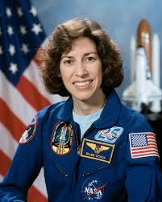
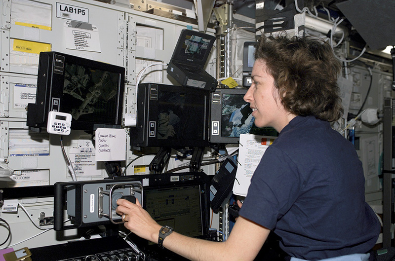
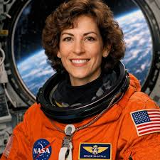

Nació el 10 de mayo de 1958 en Los Ángeles, California, hija de familia mexicana.
Desde joven destacó en música y matemáticas. Se graduó como ingeniera eléctrica y obtuvo un doctorado en Stanford, una de las mejores universidades del mundo.
Fue rechazada varias veces por la NASA, pero continuó insistiendo hasta lograrlo. En 1993 se convirtió en la primera mujer latina en viajar al espacio, un logro histórico para la representación femenina y latina.
Participó en cuatro misiones espaciales, acumulando casi mil horas fuera de la Tierra. Es también inventora y tiene patentes en sistemas de procesamiento óptico.
Años después se transformó en la primera directora latina del Centro Espacial Johnson, una de las posiciones más importantes de la NASA. Lideró programas de seguridad, exploración y entrenamiento de astronautas.
Su éxito abrió camino para jóvenes latinas en ingeniería y ciencias. Hoy promueve la educación STEM y es un modelo mundial de perseverancia.
Su historia demuestra que una mujer latina puede llegar literalmente al espacio.